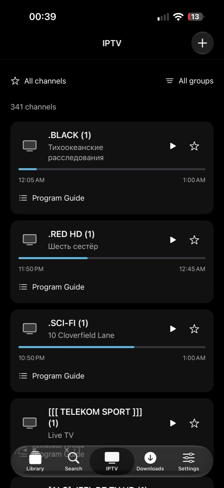

Your library.
Your way.
Films, series and live TV.
One personal library on your iPhone.
Free & open source. Bring your own media.


Look inside.
Find something you love.
Keep everything within reach.
Pick up the story.
Resume the episode you left, right where you stopped.
Find your next watch.
Search your connected films, series and episodes.
See what’s on.
Live channels, favorites and a program guide in their own tab.
Take an episode.
Or the whole season.
Save individual episodes or an entire season, then watch without a connection. Remove a download whenever you’re done.
Offline saving depends on your source’s format and download permissions. Wi-Fi and mobile data are supported.
Make room for the next watchMake it yours.
Connect your own sources. Choose your audio and subtitles. Keep your collection local, or sign in to sync it across your devices.
Jellyfin · Plex · Emby
WebDAV · Video URLs · mHub
M3U · Xtream Codes
An optional email account syncs your watchlist, progress and encrypted server connections. Downloaded videos stay on your iPhone.
Your next watch
starts here.
Oxa’s Library. Available on iPhone.
A few taps to install.
- Download the IPA from GitHub.
- Import it into ESign or your preferred sideloading tool.
- Sign with your own valid certificate and profile, then install.
- Add a source and make yourself at home.
When updating, keep the same bundle identifier and signing identity to retain your saved library.
Release notes & checksumA few answers.
Does Oxa include films or channels?
No. Oxa’s Library plays sources you add. You need permission to access and download their media.
Do I need an account?
No. Your library can stay on your iPhone. Email sign-in is optional and enables sync. Apple and Google sign-in are not included.
Which sources can I connect?
Reachable Jellyfin, Plex, Emby and WebDAV servers, supported video URLs, M3U and Xtream Codes providers, and mHub library URLs. The app offers huhu.to as a setup suggestion. Your source determines what is available.
Will every stream play or download?
No. Provider restrictions, expired links, DRM and incompatible codecs can prevent playback or offline saving. Unencrypted media streams require a separate opt-in. Public server login and catalog connections require HTTPS.
Can I reach my home server from anywhere?
Your server must be reachable from your current network. An Oxa account syncs connection settings; it does not make a private home server reachable over the internet.
What happens after a password reset?
Your viewing history and watchlist remain. Encrypted server connections need to be connected again. A normal password change keeps the existing encryption key.